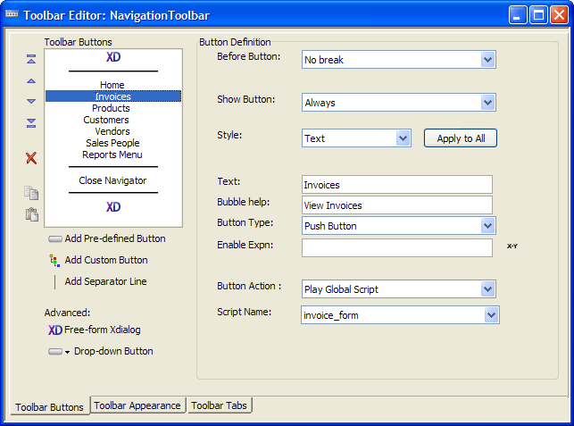

Creating the Navigation Toolbar
The NavigationToolbar toolbar provides an alternative mechanism for displaying the different forms of the AlphaSports application. Looking at the definition of the Invoices button, you can see that the Button Action is "Play Global Script" and the Script Name is "invoice_form" - the same properties as BUTTON1 , thereby reusing the invoice_form script.
{kind=link}

Procedure: Creating the NavigationToolbar
The following procedure assumes that the developer has opened the form in the Form Editor and has created all the reference scripts.Follow these instructions to create a toolbar similar to the Navigation Toolbar.
Click the Code tab of the Control Panel.
Select New > Toolbar.
Select "Blank Toolbar" and click OK to display the Toolbar Editor.
Click Free-form Xdialog .
Select "No break" in the Before Xdialog list of the Toolbar Buttons tab.
Select "Always" in the Show Button list.
Click Define Xdialog Code..., enter the following Xdialog code on the Xdialog Body tab, then click OK. This line writes the word "AlphaSports" using the 10 point bold dark blue Tahoma font. For more information, refer to Learning Xdialog.
|
' Create a title for the toolbar {'%O={C=Dark Blue}{F=Tahoma,10,B} AlphaSports %}; {font=} |
Click Add Separator Line.
Click Add Custom Button.
Enter "Home" in the Text field.
Enter "Go to the AlphaSports Home Page" in the Bubble Help field.
Select "Play Global Script" in the Button Action list.
Enter "main_menu" in the Script Name field.
-
Repeat steps 9 through 13 with the following values for the Text, Bubble Help, and Script Name fields. Select "Play Global Script" in the Button Action list for all entries.
Button Text
Bubble Help
Script Name
Invoices
View Invoices
invoice_form
Products
View Products
inventory_form
Customers
View Customer Form
customer_info_form
Vendors
View Vendors
vendors_form
Sales People
View Sales People
sales_people
Reports Menu
Reports Menu
reports_menu
Click Add Separator Line.
Click Add Custom Button.
Enter "Close Navigator" in the Text field.
Enter "Close the Navigator Toolbar" in the Bubble Help field.
Select "Run Xbasic" in the Button Action list.
Click the
 button to display the Code Editor
dialog box.
button to display the Code Editor
dialog box.Type the following Xbasic code and click OK.
Click OK to return to the Toolbar Editor.
Click Add Separator Line.
Click Free-form Xdialog .
Click Define Xdialog Code..., enter the following Xdialog code on the Xdialog Body tab, then click OK. This line creates 80 lines of blank text that pushes the bottom line of the toolbar off the bottom of the screen. For more information, refer to Learning Xdialog.
Click Save to return to the Control Panel.
|
ui_modeless_dlg_close("navigator") if (is_object(main_menu.this)) then :Main_Menu:Vcshownavbar.Text = "No" end if |
|
' Push the closing separator to the bottom of the screen. {text=15,80:dummy_text}; |
An Explanation of the Xbasic Code
The first line of code uses the ui_modeless_dlg_close() function to close the Navigation toolbar.
|
ui_modeless_dlg_close("navigator") |
The next line uses the is_object() function to test if the Main Menu form is open. If it is, it un-checks the menu option to display the toolbar. See vCshowNavBar on<x>change Event.
|
if (is_object(main_menu.this)) then :Main_Menu:Vcshownavbar.Text = "No" end if |
See Also
Displaying the Navigation Toolbar, Ending the AlphaSports Application, Starting the AlphaSports Application, The Main Menu Form